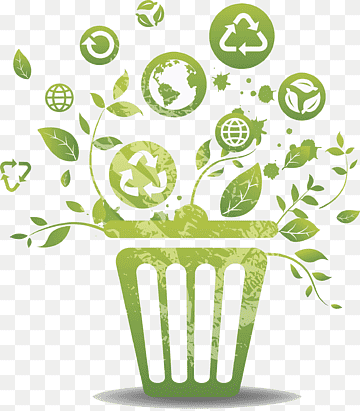
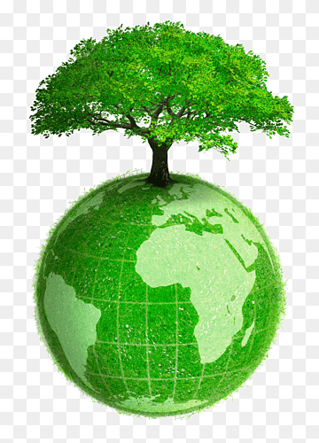
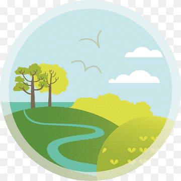
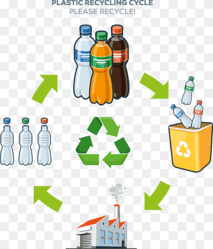
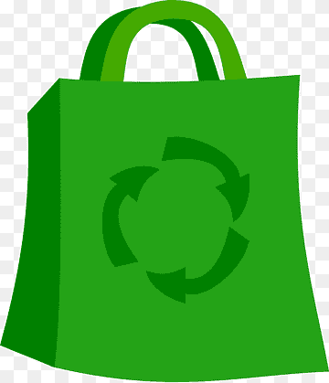
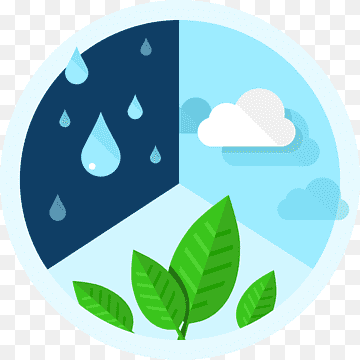
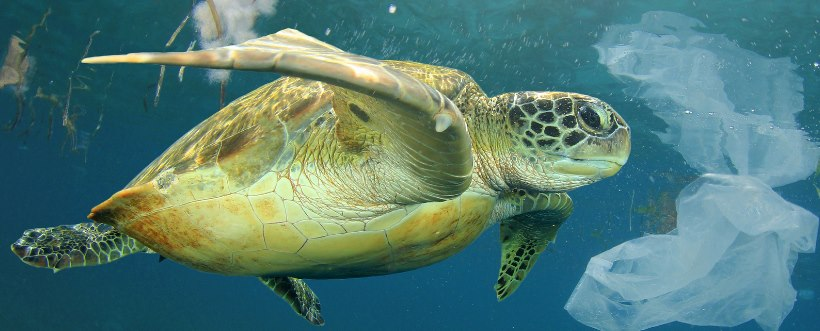
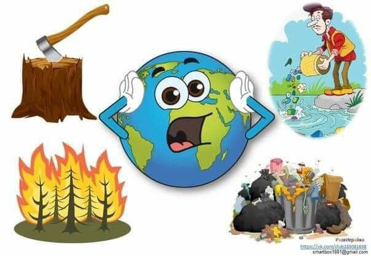

Reciclaje de papel contenedor de residuos
Reciclaje de papel contenedor de residuos
protección del medio ambiente,
bote de basura verde, pintado, hoja, texto.

Respetuoso con el medio ambiente vida sostenible
Respetuoso con el medio ambiente vida sostenible
medio ambiente medio ambiente tecnología,
diverso, globo, hierba.

Medio Ambiente natural evaluación de impacto ambiental,
Medio Ambiente natural evaluación de impacto ambiental,
material de protección ambiental.,
fondo de pantalla de la computadora, hierba,
protección del medio ambiente.
Fábrica que produce humo, contaminación ambiente natural problema ambiental evaluación de impacto ambiental, trabajador industrial, atmósfera, nube, gente.

Ciclo de reciclaje de plástico,
botella de plástico reciclaje de plástico
Ciclo de reciclaje de plástico,
botella de plástico reciclaje de plástico
evaluación del ciclo de vida,
reciclaje de botellas de plástico para bebidas y basura,
ambiental, reciclaje, residuos.

Reciclar, Compras, Bolsa, Flechas,
Reciclar, Compras, Bolsa, Flechas,
Ciclo, Verde, Vida ecológica,
Medio ambiente, Reciclaje,
Compras ecológicas.

Evaluación de impacto ambiental
Evaluación de impacto ambiental
ambiente natural degradación ambiental
monitoreo ambiental, ambiente natural,
hoja, ambiental, desarrollo.

Impacto humano en el medio ambiente
contaminación medio ambiente medio ambiente ciencia,
ciencia ambiental, globo, logo,
fondo de pantalla de la computadora.
.jpg)
El impacto ambiental que tienen las actividades humanas para lograr un desarrollo sostenible y que no interfiera en la evolución de los ecosistemas. Por ello, en el artículo de hoy veremos qué es el impacto ambiental, qué tipos existen y otros aspectos relacionados con este concepto. Además, queremos brindarte la mayor información de nuestra Maestría Internacional en Energía Solar Fotovoltaica, con la que podrás convertirte en un/a especialista del aprovechamiento de esta energía.

El objetivo de esta llamada a la acción no es más que
El objetivo de esta llamada a la acción no es más que
realizar un ejercicio de reflexión sobre la necesidad real,
en nuestro día a día, de tanta cantidad de envases o
envolturas de plástico.

Existen diferentes tipos de contaminación,
Existen diferentes tipos de contaminación,
pero básicamente se pueden dividir en:
contaminación del aire,
contaminación de suelos (tierra) y contaminación del agua.
El aire que respiras es importante para la vida en la Tierra.
Todos los seres vivos necesitamos de esta fuente de oxígeno para existir.
Sin embargo, hay muchos elementos que pueden llenarlo de impurezas
que pueden provocar malestar en las personas, en las plantas
y en los animales.
Si respiramos aire sucio, nos enfermamos.
.jpg)